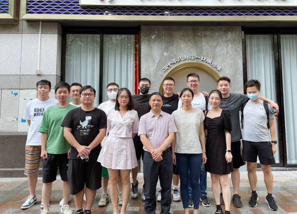
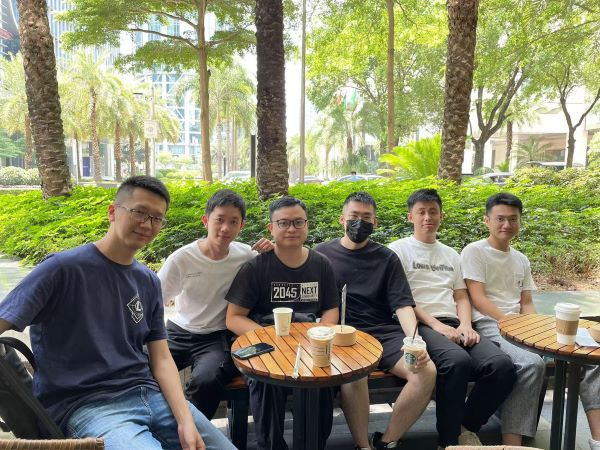
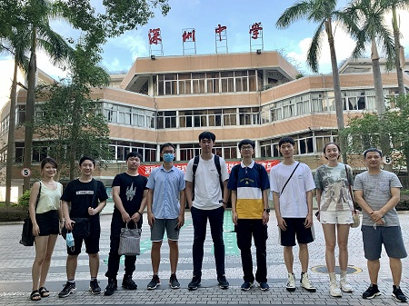
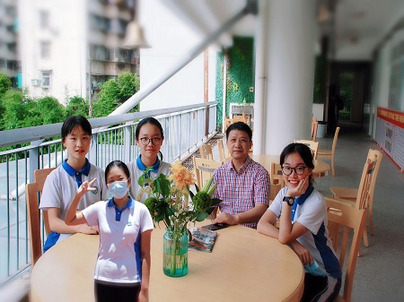
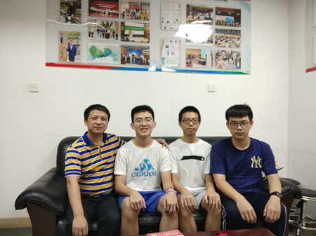
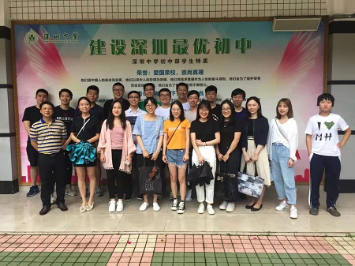

仁义礼智信 正大自光明 返回首页
仁义礼智信 正大自光明 返回首页
影像记忆：2006届 2009届 2012届 2015届 2018届 2018级9班（初一） 2020届6班（初三）
仁义礼智信 正大自光明 返回首页
影像记忆：2006届 2009届 2012届 2015届 2018届 2018级9班（初一） 2020届6班（初三）

20220730毕业十年小聚

20220503汤浩恒提供小聚合影

左：郝宇焜等回母校小聚 右：邓一晨等放假前合影
 
左：2019年9月10日教师节 右：2019年7月21日，龚拓带领部分同学重游初中部